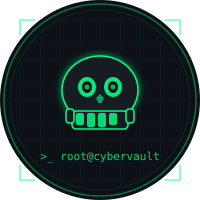

// About
Who's behind the terminal?

Cyber Security Analyst from Sri Lanka with hands-on experience in Digital Forensics and Incident Response (DFIR), threat detection, and security operations. I write detailed writeups, tool breakdowns, and investigation guides to help the security community grow.
Background
I started my cybersecurity journey out of curiosity -- trying to understand how systems work, how attacks unfold, and how to defend against them. What began as tinkering with security labs evolved into a serious dedication to SecOps, Digital Forensics and Incident Response (DFIR), threat hunting, and detection engineering.
is my digital notebook -- a place where I document DFIR workflows, threat detection strategies, and forensic analysis. My goal is to create content that's both practical and educational, helping defenders stay ahead of active threats.
Get In Touch
Have a question, collaboration idea, or want to discuss security research? Feel free to reach out.